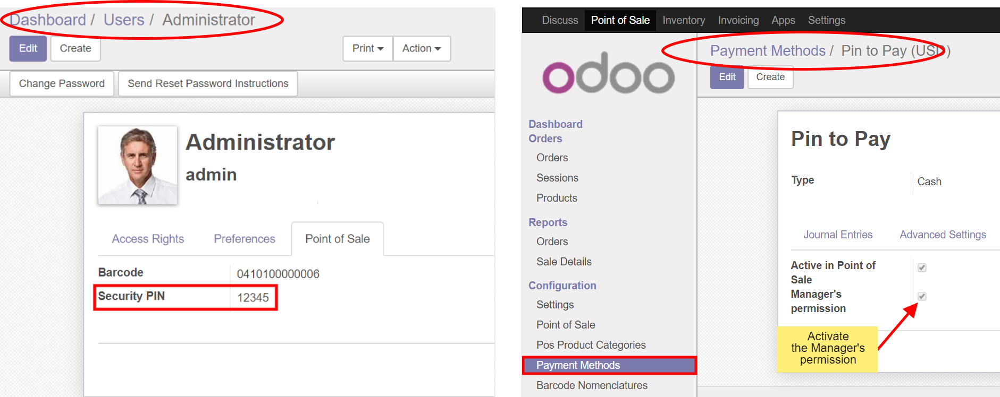

The module requires POS manager's permission, which can be attained by entering PIN prior the usage of the journal.
This is a good solution if you want to restrict the option of choosing the payment methods by usual staff members to improve customer service and cost savings to business owners achieved by micro-controlling.
How It Works
Set a PIN for a POS Manager
Activate Manager's Permission

Select and click a payment method with enabled Manager's Permission option
Choose the Manager and enter his/her PIN and confirm
Payment line with selected payment method is added